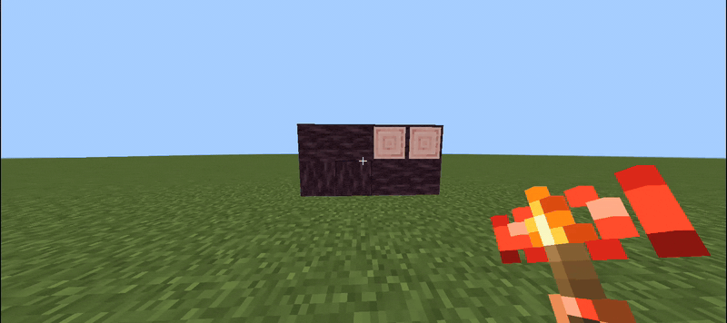

Quick start
From zero to a hidden entrance in sixty seconds. Everything else in this wiki is optional detail.
01
Craft the gateway
Nine-slot recipe: planks in the corners, glass on the edges, one redstone in the middle → 4× Decoy Block. Everything else is built from it.
02
Place it on a face
Tap any side of a wall, floor or ceiling. The new block immediately copies what you tapped — including log direction and grass tint.
03
Walk through it
No collision, no light leak. Your base is behind a wall that looks completely solid and cannot be seen from outside.
04
Add a door and a remote
Craft a decoy door or trapdoor, then a remote torch lever. Hold the torch, Shift + tap the door to link it, and place the torch anywhere.
▸ LIVE

The whole pack in miniature
- Ghost walls stop eyes, not bodies — use a decoy door where something must actually close.
- Spy glass is solid from the corridor and clear from inside; hold Sneak to widen the viewing angle.
- Doors and trapdoors copy the wall around them, half by half, so a diamond bottom and an emerald top can live in one door.
- Remote torches output zero redstone — they open linked doors through walls, from any distance.
First build idea
Replace one stone block in a cliff with a Decoy Block, put a Decoy Door next to it, and hide a remote torch in a flower pot two rooms away. That is a complete secret base.
Next: how the camouflage engine works, or jump straight to all ten recipes.
Minimum starter kit
| Item | Amount | Why |
|---|---|---|
| Decoy Block | 4 per craft | Gateway item; every other craft starts from it. |
| Decoy Door | 2 per craft | A pair is enough for a double entrance. |
| Remote Torch Lever | 1 | Opens the door through walls with no redstone output. |
| Any axe | 1 | Fast, clean removal of misplaced decoys. |
Your first hidden room in six steps
1
Craft the gateway
Planks in the corners, glass on the edges, redstone in the centre → 4 Decoy Blocks.
2
Build a real room
Make a small room with a solid wall of the material you want to imitate.
3
Replace one wall section
Tap the wall with a Decoy Block. The new block copies the face you tapped and has no collision.
4
Add a door
Place a Decoy Door in the opening. Each half resolves its own camouflage from the nearby wall.
5
Bind a remote
Hold a Remote Torch Lever, Shift + tap the door, then place the torch anywhere.
6
Test from outside
Walk through the ghost wall, tap the torch, and confirm the door opens without any visible wire.
Verification checklist
- The ghost wall looks identical to the neighbouring block, including log axis and grass tint.
- You can walk through the ghost wall but not through a closed decoy door.
- The remote torch outputs no redstone power; a wired torch lever outputs power 15.
- Breaking a door drops exactly one item from the lower half.
- Both packs are active: behaviour alone shows nothing, resources alone show untextured blocks.